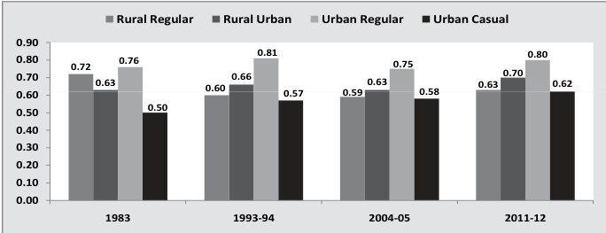

| Year | Rural Regular | Rural Urban | Urban Regular | Urban Casual | | :--- | :--- | :--- | :--- | :--- | | 1983 | 0.72 | 0.63 | 0.76 | 0.50 | | 1993-94 | 0.60 | 0.66 | 0.81 | 0.57 | | 2004-05 | 0.59 | 0.63 | 0.75 | 0.58 | | 2011-12 | 0.63 | 0.70 | 0.80 | 0.62 |
